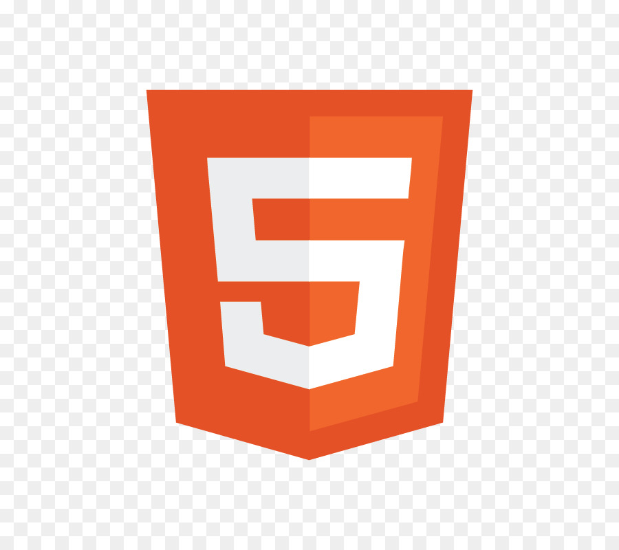

About Myself
My passion lies in creating technology-driven solutions that enhance accessibility and inclusivity. I developed RadianT Play, an interactive rehabilitation game that transforms traditional sports like badminton, cricket, and tennis into engaging physiotherapy exercises for individuals with neurological and muscular disorders. This groundbreaking initiative secured 1st place at IIT Bombay’s TechFest 2024, Asia’s largest tech festival, and was recognized as a runner-up at Vadodara Toycathon 2024. Currently incubated at PIERC, I’m focused on commercializing RadianT Play and connecting with investors and professionals passionate about inclusive technology. Let’s collaborate to redefine accessibility through innovation! Here are the list of Programming languages i have my own expertise :

- 